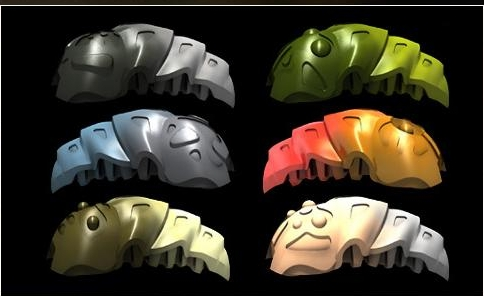

Noble purpose, awful execution
 The Makuta are a group of powerful beings originally created to maintain peace and order in the Matoran Universe. Their task was to produce Rahi - which are necessary for the Universe to function - and plants to fill the Universe with life.
The Makuta are a group of powerful beings originally created to maintain peace and order in the Matoran Universe. Their task was to produce Rahi - which are necessary for the Universe to function - and plants to fill the Universe with life.
This, however, did not last as the malevolent and arrogant race eventually became corrupted. All thanks to Teridax, the Makuta of Metru Nui, who devised a plan to overthrow Mata Nui and gain control of the Matoran Universe.
Makuta are formed out of liquid and solid Antidermis, a black and green substance, and protosteel armor, the sturdiest metal known in the Matoran Universe.
The species are able to produce Kraata from their bodies, that is, slug-like creatures that can infect Kanohi. A Kanohi corrupted by this kind of infection will make the wearer subject to the said Makuta.

The Makuta soon organized themselves into the organization known as Brotherhood of Makuta which served their original purpose, creating Rahi, for a time, but eventually became corrupted. The brotherhood itself composed of members of the Makuta species, but also recruited other beings for servants and slaves, for instance.